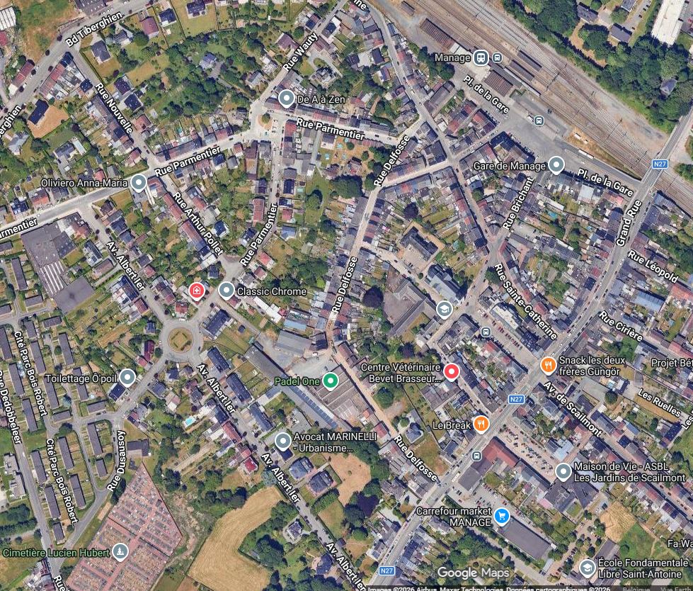

Manage — Brocante · 10 secteurs
Tous les secteurs
Vue d’ensemble
Détail Gare
Détail sud / Grand-Rue
Rechercher
Vue complète
Actualiser
Chargement…

10 secteurs · Choisissez un secteur pour voir ses emplacements
Contours indicatifs · Google Maps / Airbus / Maxar
+
−